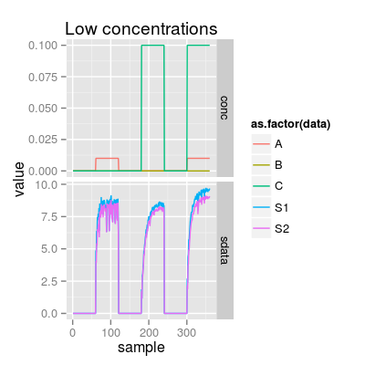
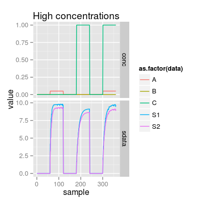
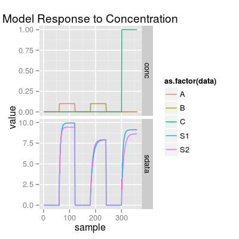
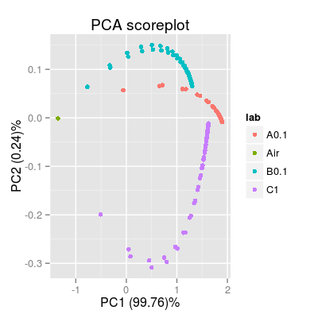

defaultParSensorDynamics() SensorDynamics(...)
List of the default parameters.
Method nconst.
Method trange.
Method tconst.
Class SensorDynamics emulates a temporal
dynamics of the sensor as a low-pass filter.
Function to get default constructor parameters of class
SensorDynamics.
Constructor method of SensorDynamics Class.
Wrapper function SensorDynamics.
Slots of the class:
num |
Sensor
number (1:17). The default value is 1. |
gases |
Gas indices. |
ngases |
The number of gases. |
gnames |
Names of gases. |
concUnits |
Concentration units external to the model. |
concUnitsInt |
Concentration units internal to the model. |
tunit |
Time
length of the gas pulses. The default value is 60.
|
enableDyn |
A logical value indicates
whether time dynamics is enabled. It is TRUE if
tunit is greater than one. |
tconst |
Time constants of the low pass filter. |
Methods of the class:
predict |
Predicts a temporal response of the sensor. |
coef |
Extracts the time constants of the filter. |
The plot method has one type (parameter y):
predict |
Depicts a temporal signal of the model. |
### Sensor dynamics: default initialization sdyn <- SensorDynamics() sdyn # equivalent to: show(sdyn)Sensor Dynamics Model (num 1)print(sdyn)Sensor Dynamics Model - num 1 - 3 gases A, B, C#plot(sdyn) ### SensorDynamics as a part of SensorModel sm <- SensorModel(tunit = 60) sdyn <- as(sm, "SensorDynamics") ### Demo 1: response to pulses of different concentrations set.seed(5) sa <- SensorArray(tunit = 60, csd = 1, ssd = 0, dsd = 0) # mixture at low concentrations p1 <- plotSignal(sa, set = c("A 0.01", "C 0.1", "A 0.01, C 0.1"), main = "Low concentrations") p1
# mixture at high concentrations p2 <- plotSignal(sa, set = c("A 0.05", "C 1", "A 0.05, C 1"), main = "High concentrations") p2
### sa <- SensorArray(tunit = 60, nsd = 0) p3 <- plotSignal(sa, set = c("A", "B", "C")) p3
p4 <- plotPCA(sa, set = c("A", "B", "C")) p4
UNIMANtransient